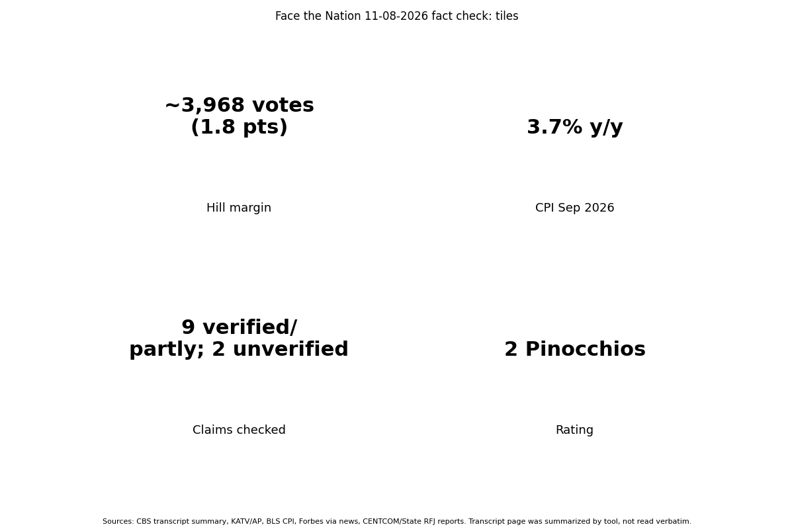

The transcript's checkable facts largely hold: the Wiles-to-Miller change, Hill's roughly 4,000-vote win, Lacore's flip, the unsigned housing law and the $20 million CENTCOM reward. Rating: 2 Pinocchios (guest claims, not CBS's reporting).
| Wiles out, Miller chief of staff | Verified (WBTV, NPR 11/6) |
| Hill won by just over 4,000 votes | Verified (about 3,968-4,000; AP/KATV, SoS) |
| Lacore flipped SC-1, ex-Navy Reserve chief removed | Verified (SC Daily Gazette, WTOC) |
| Housing bill with PE ban became law unsigned | Mostly true: law July 11, 2026 without signature; bans purchases by owners of 350+ homes, not all private equity; Warren as sponsor not confirmed |
| CENTCOM $20M reward Iran nuclear | Verified (Rewards for Justice, Nov 6-7) |
| Hill: inflation fell 9% to 3% | Misleading: peak 9.1% 2022 true, but CPI is 3.7% y/y Sept 2026 (BLS); '20% peak' is cumulative price level, not a rate |
| Forbes $3B net worth | Forbes puts Trump at $7.3B, up ~$3B in a year; the gain figure is real, so Douthat's denial context matters |
| Means: kratom limit raised 20x; Reynolds $5M PAC | Not checkable here: no source found |
| Overton FDA nominee | Not checkable here: no source found; Makary left FDA May 2026 |
| Means/Wiles feud | Corroborated by Rogan podcast reports; motives are Means's allegations, denied by those named |
Each row: Answer as shown; Confidence medium (secondary press; primary BLS for CPI high).